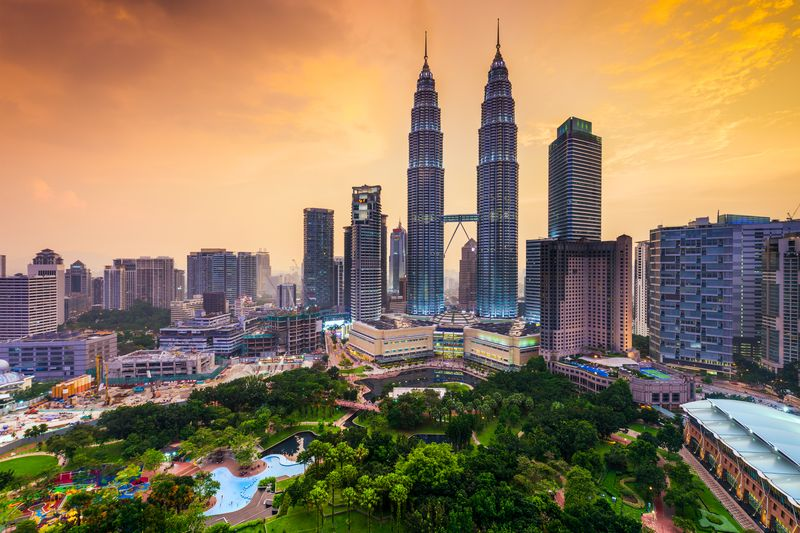

Nos coups de coeur
- 
Grimper en haut des Tours Petronas
Activité incontournable à Kuala Lumpur, l’ascension des tours jumelles permet de profiter d’un panorama vertigineux sur la capitale malaise. Elles appartiennent à la société de pétrole et culminent à 452 mètres, pour 88 étages. Visiter Georgetown à Penang
Dans Chinatown et Little India, découvrez la cité coloniale classée au patrimoine mondial de l’UNESCO: son architecture composée de shophouses, maisons de marchands traditionnelles et ses nombreux temples hindous et bouddhistes.
Visiter la mosquée de Cristal à Kuala Terengganu
La Mosquée de Cristal est un des plus beaux exemples d’architecture musulmane.
Observer la faune sauvage à Bornéo
Explorer la forêt vierge en randonnée et observer d’innombrables espèces animales. Partez à la rencontre des derniers peuples tribaux de Bornéo au cœur de la jungle.Faire du snorkeling dans les îles
Prenez la direction des îles de Tioman ou de Perhentian et embarquer pour une sortie snorkeling en bateau, à la découverte des récifs coralliens.